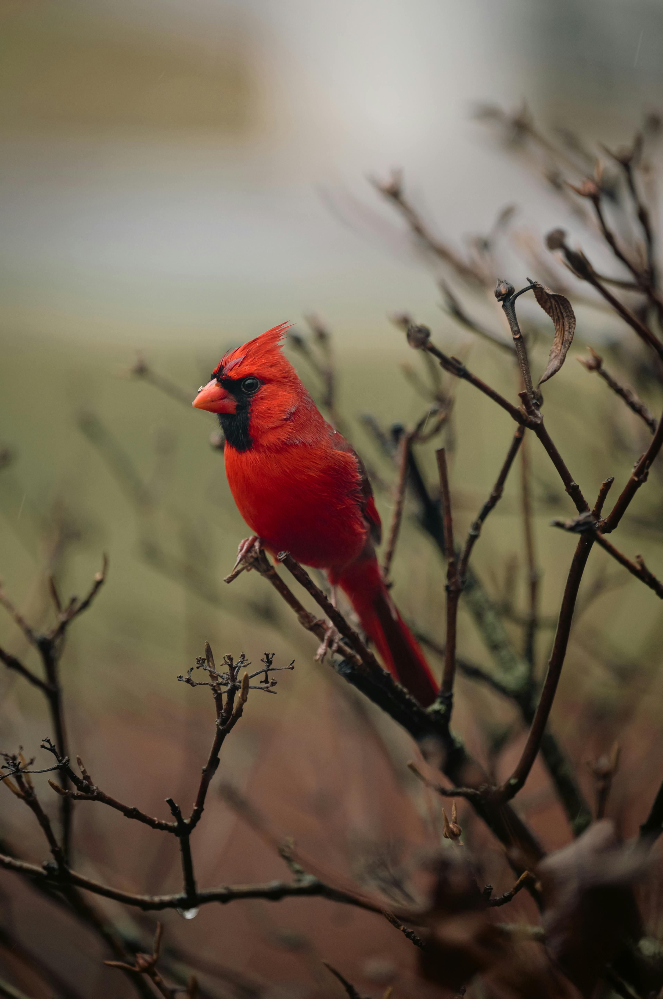
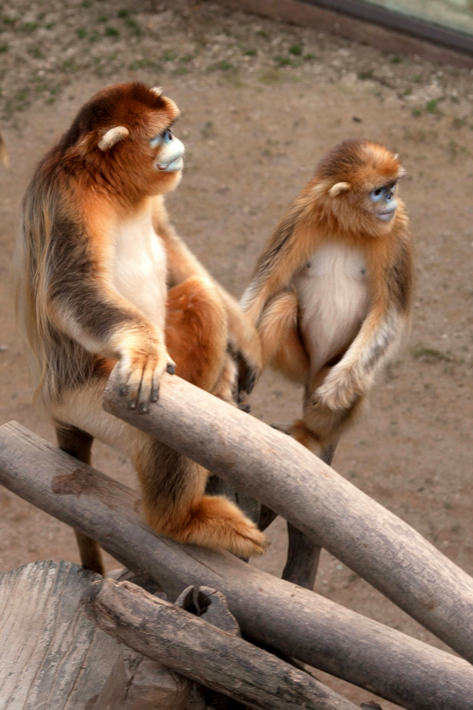
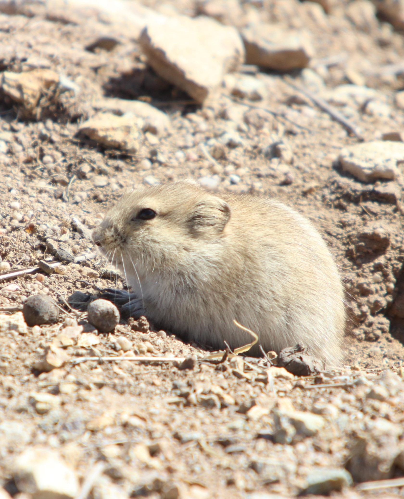
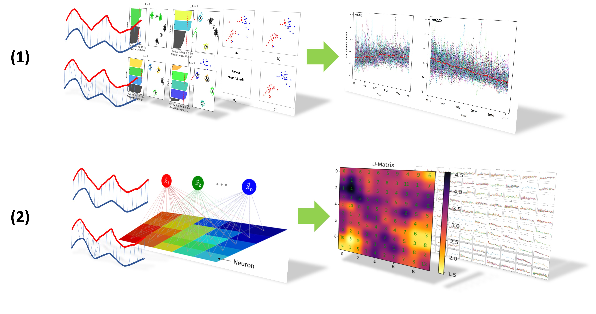
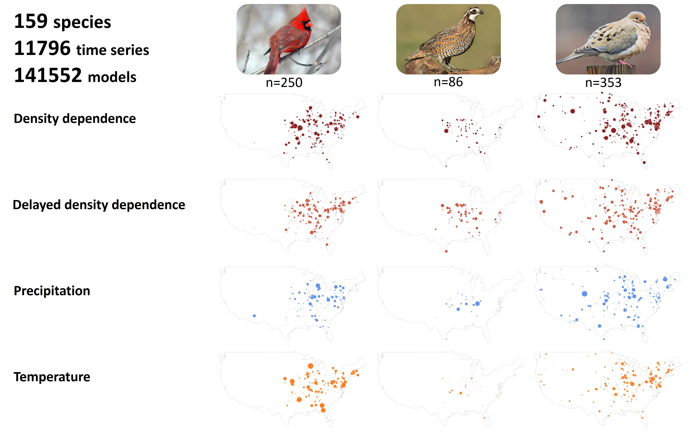
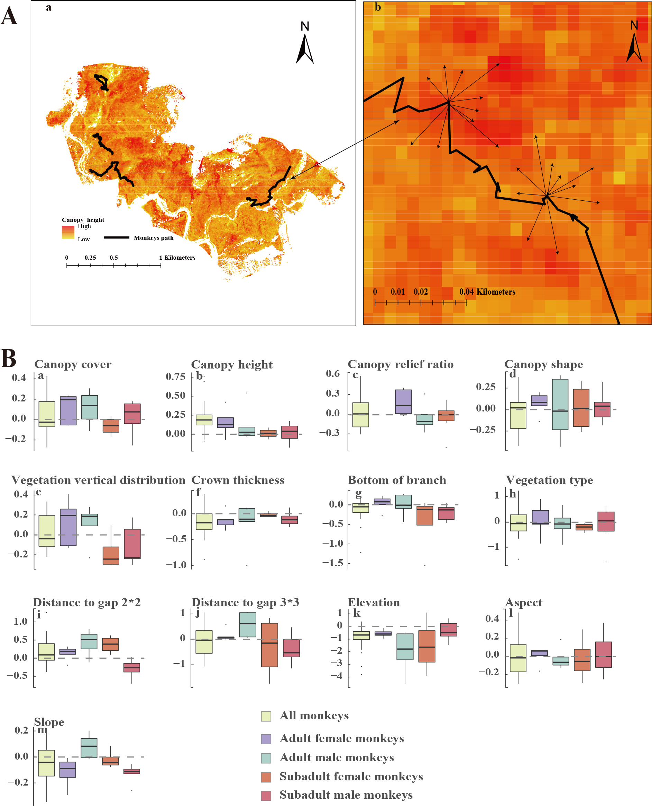
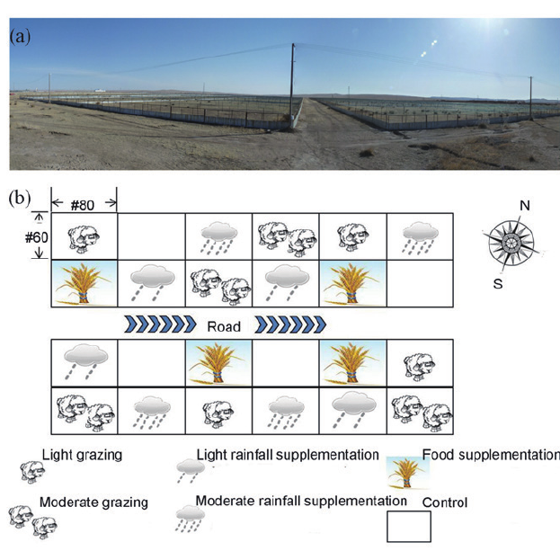

Research Projects




2019 - 2024
Spatio-temporal Dynamics of North American Birds
Since the beginning of the Anthropocene, global changes have caused dramatic declines in animal abundances and biodiversity losses. Birds have suffered about 0.4-billion reduction in the total abundance in Europe from 1980 to 2009 and one-third loss in North America since 1970 (Inger et al., 2015; Rosenberg et al., 2019). The precipitous nature of these population declines has heightened the urgency for stopping biodiversity losses. Responses of avian populations to environmental variations, such as those caused by climate changes, depend on the life history traits of species. Therefore, understanding the effects of life history traits on population trends and responses of birds to climate changes at a species level can help us predict the continental population declines or extinction risks of avian species. However, it is still unknown how interactions among life history traits, population regulation, and climate changes’ effects result in decreasing, stable, or increasing trends in continental avian populations.
In this study, I used shape-match time series clustering techniques to identify population trends and state space models (SSMs) to characterize dynamic patterns for 428 avian species breeding in North America. Then I evaluated the effects of life history traits, density dependence, and responses to climate changes on population trend patterns using structure equation models (SEMs). I aimed to test the following three hypotheses concerning endogenous and exogenous determinants of avian population trends. First, density dependent regulation would be weaker in the birds with life history traits providing stronger physiological and behavioral buffering (e.g., body size and parental care) to environmental variability. Second, population regulation would stabilize population dynamics; thus, long-term increasing or decreasing trends would result from exogeneous forces such as climate changes. I predict that the probability of having increasing trends would be related to the effects of climate changes on population dynamics, but not to density dependence. Third, the effects of climate changes on population dynamics would be mediated by life history traits.
My study identified two distinct temporal dynamic trends in North American breeding bird populations. Life history traits, density dependence, and responses to climate changes interact to determine these population trends. Specifically, life-history traits indirectly affect population trends by mediating the effects of climate. Understanding this mechanism would enhance the comprehension of bird population dynamics and would aid in the preservation of avian biodiversity.


2022 - 2024
Deer Project
To be updated when project completed.
2018 - 2019
Primates Movement and Habitat Selection
Movement patterns can reflect species-specific characteristics of individuals and animal groups at a given scale. Accurate three-dimensional (3D) assessment can quantify the relationship between movement patterns of an animal and its unique habitat. We evaluated the effects of habitat structure on movement patterns of the golden snub-nosed monkey (Rhinopithecus roxellana). We used airborne light detection and ranging (LiDAR) to map the 3D structure of the temperate forest in the Qinling Mountains (Shaanxi, China). We then integrated field observations of monkey movements with the 3D structure data to characterize movement patterns and habitat use in the horizontal and vertical dimensions.
Our analysis revealed that food availability and thermal regulation were the main drivers of movement; however, forest structure and environmental variables affected movement capacity in different age and sex groups. High-canopy forests were associated with increased continuity of movement trajectories and provided habitats with higher food availability, as well as sites favorable for thermal regulation and predation avoidance. The high-resolution 3D forest structure data provided new insights into variation in habitat selection among age and sex groups, which likely reflect sexual dimorphism and the different roles and ranks of individuals. Reconstructing the 3D environment in ecological studies holds considerable potential to more accurately understand the environment of animals and the drivers of their behavior.

2012 - 2018
Behaviors and Population Dynamics of Grassland Rodents
Brandt's vole (Lasiopodomys brandtii) is a common species in typical steppes, which lives in groups and has obvious cooperation behaviors. During autumn, Brandt's voles begin to dig burrows and to forage in groups. Digging and foraging activities are critical to survive the bitter winter. Every group members participates in burrowing to ensure adequate storage capacity for food. During this period, individual cooperation intensifies, making Brandt's vole an ideal model species for studying cooperation mechanisms in small mammal communities.
To investigate the key environmental factors affecting burrowing behavior and to study the cooperative dynamics of Brandt's vole, I conducted an experiment at the Research Station of Animal Ecology on Grassland in Inner Mongolia in 2017. The study involved 10 enclosures: 4 control groups, 3 light rainfall supplementation groups, and 3 moderate rainfall supplementation groups. Environmental factors such as temperature, wind speed, soil temperature, and other meteorological variables were continuously recorded during the burrowing period. Soil hardness, humidity, and vegetation structure of each enclosure were also investigated. Regression analysis was used to analyze the impact of these environmental factors on burrowing behavior, and cooperation dynamics were examined using mark-recapture data. The main conclusions are as follows:
(1) Precipitation supplementation can change soil moisture and overall vegetation coverage and biomass in the enclosures. The average digging yield decreases with the increased biomass of dicotyledon, but not significant (p > 0.05). Environmental factors such as temperature changes, wind speed and soil temperature also had no significant effect on the burrowing behavior (p > 0.05), while the sudden drop of temperature may trigger the increase in burrowing. There was a highly significant negative correlation between burrowing activity and soil hardness (y = -371.41x + 189159, r² = 0.71, p < 0.01), and also a significant positive correlation with soil moisture at the depth of 20 cm (y = 5072x – 6911, r² = 0.39, p < 0.05).
(2) The member of each group were identified by marking recapture. Combined with burrowing data, I found that with the increase of group size, the individual's digging efficiency was significantly reduced (p < 0.05), which may be one of the reasons for groups to split in autumn. During the burrowing process, females significantly contribute more than males (p < 0.01), which may spends more time to resist invasion from other individuals.

Li et al. 2016
Publications
Song, W., Kouba A.J., Burger L.M., et al. Interactions of life history traits, density dependence and responses to climate changes on long-term dynamic patterns of North American breeding bird populations. (In prep)
Yang, H. T., Li, S., Hou, R., Song, W. T., Fu, Y. W., Li, Y. B., ... & Li, B. G. (2023). Three-dimensional Assessment of Movement Patterns of Sichuan Snub-nosed Monkeys Affected by Habitat Structure in Temperate Forests. Zoological Research, 44(2), 361.
Song, W., Wang, Y., Zhang, X., Zhang, W., . . . & Wan, X. (2017). Influence of Group Size and Foraging Distance on Vigilance Frequency of Brandt′s Vole (Lasiopodomys brandtii) in Food Storing Period. Chinese Journal of Zoology, 52(5): 754-760.
Song, W., Wang, Y., Sai, N., . . . & Zhang, Z. (2016). Numerical Response of Hawks Density to the Rodents Density in Typical Steppe. Chinese Journal of Zoology, 51(4): 529-535.